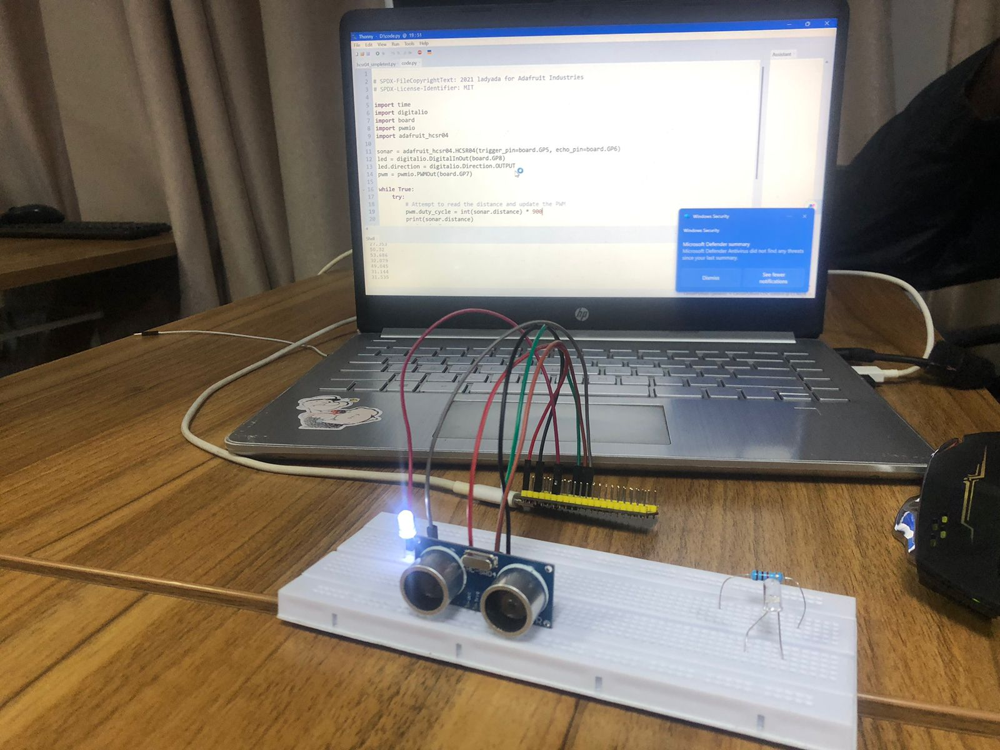
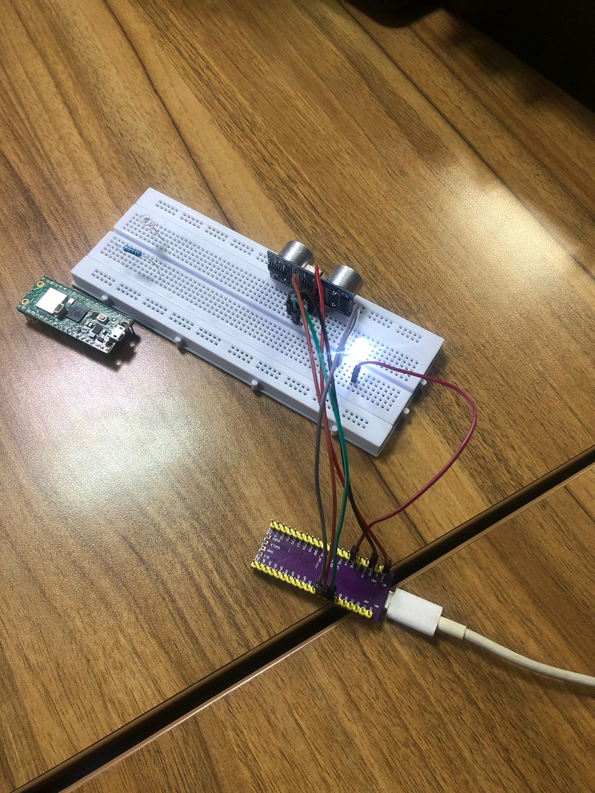
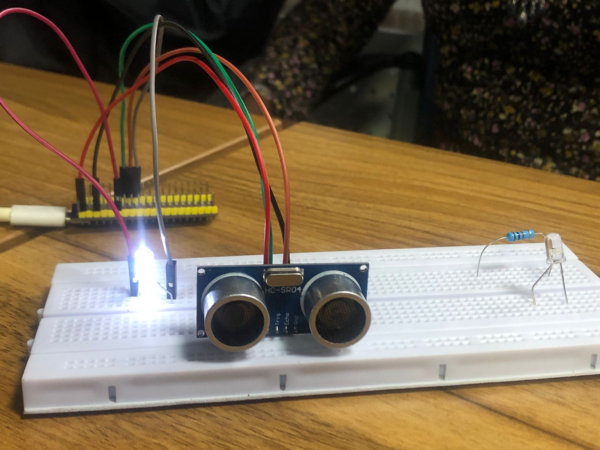

Project Overview
This week, we focused on familiarizing ourselves with hardware interaction using the Raspberry Pi Pico. The goal was to successfully interface a microcontroller with both a sensor (to read environmental data) and an actuator (to trigger a physical response based on that data).
For this build, I used an HC-SR04 Ultrasonic Distance Sensor as the input and an LED as the output actuator. Using CircuitPython, the system reads the distance measured by the sonar and dynamically adjusts the brightness of the LED using Pulse Width Modulation (PWM).



The Code
Below is the CircuitPython script I wrote to handle the logic. It initializes the pins for the HC-SR04 and sets up a PWM output for the LED. Inside the main loop, it multiplies the detected distance by 900 to scale the value appropriately for the LED's duty cycle, effectively dimming or brightening the LED as objects move closer or further away.
# SPDX-FileCopyrightText: 2021 ladyada for Adafruit Industries
# SPDX-License-Identifier: MIT
import time
import digitalio
import board
import pwmio
import adafruit_hcsr04
# Initialize Sensor and Actuator
sonar = adafruit_hcsr04.HCSR04(trigger_pin=board.GP5, echo_pin=board.GP6)
led = digitalio.DigitalInOut(board.GP8)
led.direction = digitalio.Direction.OUTPUT
pwm = pwmio.PWMOut(board.GP7)
while True:
try:
# Attempt to read the distance and update the PWM
pwm.duty_cycle = int(sonar.distance) * 900
print(sonar.distance)
except RuntimeError:
print("Retrying!")
time.sleep(0.1)